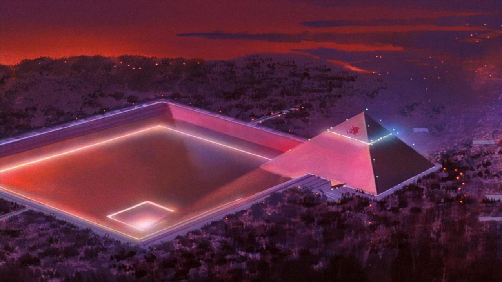

გეოფრონტი

გეოფრონტი არის ორგანიზაცია დარკრუმის შტაბ-ბინა. ის მოიცავს როგორც ცენტრალურ, ისე შინაგან დოგმას. არის თუ არა დარკრუმის სხვა პერიფერიები, ანუ ძრავა-სისტემები განლაგებული ამავე ლოკაციაზე, უცნობია. ვარაუდობენ, რომ მთელი ორგანიზაციის ენერგომომარაგების წყარო გამომდინარეობს ტრმინალურ დოგმაში მყოფი ერთი იდუმალი ობიექტიდან, რომელსაც 'შავი ზღვის ბილინგვა' ეწოდება. ცნობილია, რომ დარკრუმის ორგანიზაციას განაგებს 10 პირი, რომელთა ვინაობა დადგენილი არ არის. ათივე შემადგენელ წევრს გააჩნია საკუთარი სახელობის ძრავა-სისტემა, რომელთაგან გამოკვლეულია მხოლოდ 5.